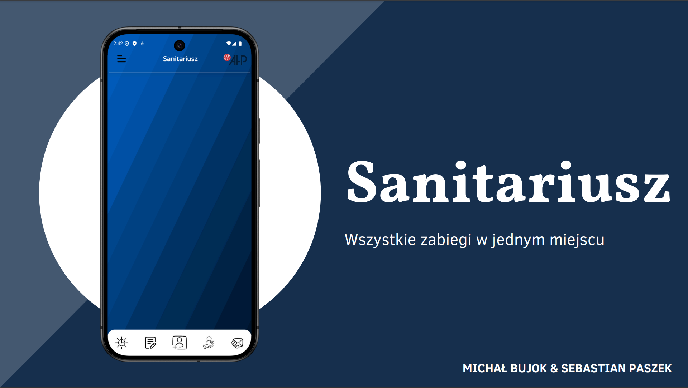
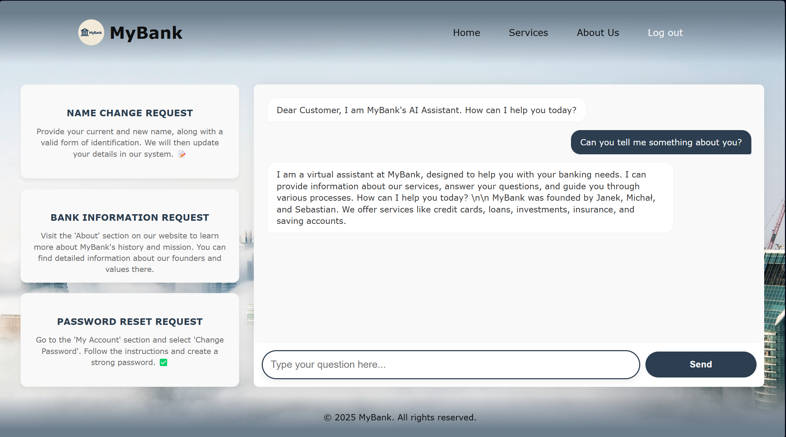

Cloud Architecture
AWS and Azure fundamentals, network-aware design, scalable compute, resilient storage, and secure service boundaries.
Cloud Engineer
I build secure, observable, and cost-aware platforms with automation first. From infrastructure design to delivery pipelines, I focus on clean architecture and measurable reliability.
0
Cloud Deployments
0
Uptime Target (%)
0
Automation Flows
About
I am a cloud-oriented software engineer focused on building dependable systems with clear ownership and clean operations. I enjoy turning complex infrastructure into predictable, maintainable workflows that teams can trust.
Stack
AWS and Azure fundamentals, network-aware design, scalable compute, resilient storage, and secure service boundaries.
Infrastructure as Code and repeatable provisioning workflows with strong focus on consistency across environments.
CI/CD pipelines, release reliability, and measurable quality gates to ship faster with lower risk.
Monitoring, log strategy, and incident-oriented telemetry to keep production visible and stable.
Projects

Patient management workflow with emphasis on clarity, speed, and reliable data handling.

Assistant concept for banking support, improving client experience with automation-driven interactions.

Task and collaboration application focused on structured planning and transparent team execution.
Contact